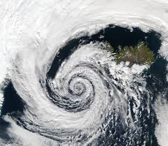
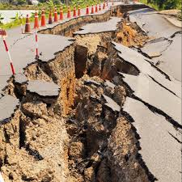

Like the cold, some solar panels are built to withstand even the toughest of weathers. So there is a slim chance that a solar panel will survive an attack from a cyclone,
but it's recommended that you turn them all off before a cyclone hits. Another disaster that a solar panel can endure is the earthquake.
They can withstand the earthquake shocks if built with the right materials, this is the same with hailstorms and landslides(depending on the size of it) too.
A direct strike of lightning is highly unlikely but if it hits nearby, it can emit a strong electromagnetic field, which damages the components of the soalr panels.
They can survive floods if your home’s wiring isn’t broken/damaged. Solar panels can not withstand the power of volcanoes, obviously. But it doesn’t harm its solar power.
Aswell with volcanoes they cannot survive the pressure of Tsunamis